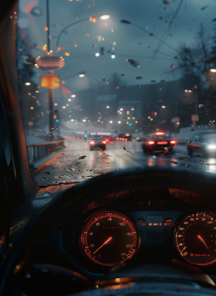
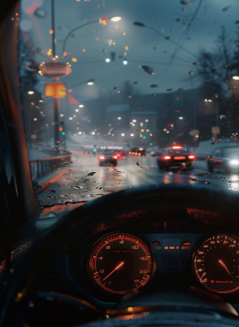

What mobility do you resonate the most?
Driving
Biking

Ferry
Walking
The following contents displayed were generated using AI technologies from Midjourney, ChatGPT, and Pika. It’s created for illustrative purposes and may reflect the AI's interpretation based on its training. While we strive for originality and accuracy, we acknowledge these creations might not be perfect and are not intended to infringe on any intellectual property rights. We credit and thank the teams behind these AI tools for their innovative contributions to digital content creation.
Do you remember the time you got your first mobile phone?
Adventourous
Minimalist
Laid back
Hurry
Driving
Biking
Ferry
Walking
As we conclude our journey today, let's reflect on our ISE framework and the story of Eli, set in a distant future envisioned through generative AI storytelling. We invite you to imagine your own role in this exciting world. With the customized experiences we've shared, dream boldly and envision a realm of limitless possibilities. Together, let’s embrace the future of AI, propelled by your creativity. Thank you for joining us on this extraordinary adventure.
Before you leave, feel free to grab a ticket and enjoy our journey once more